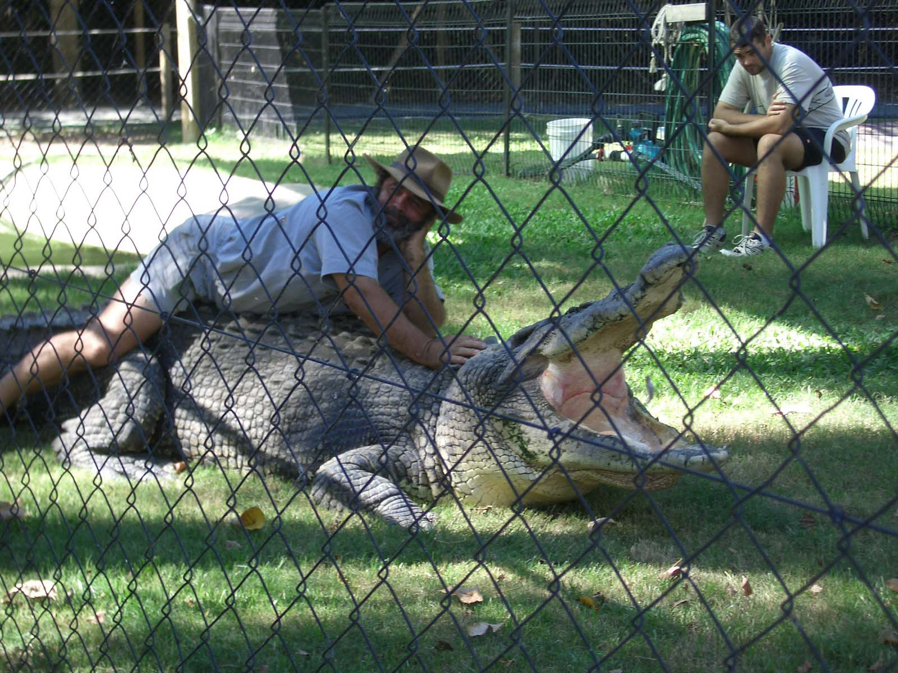
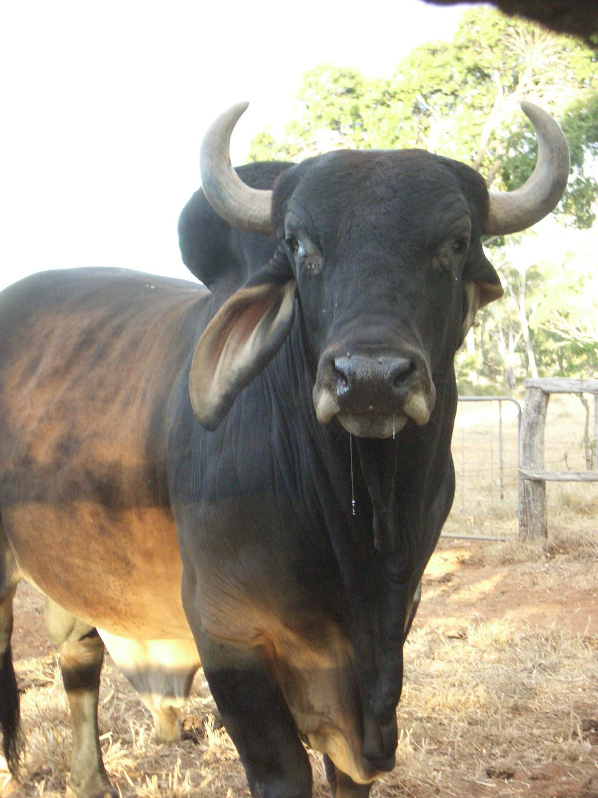
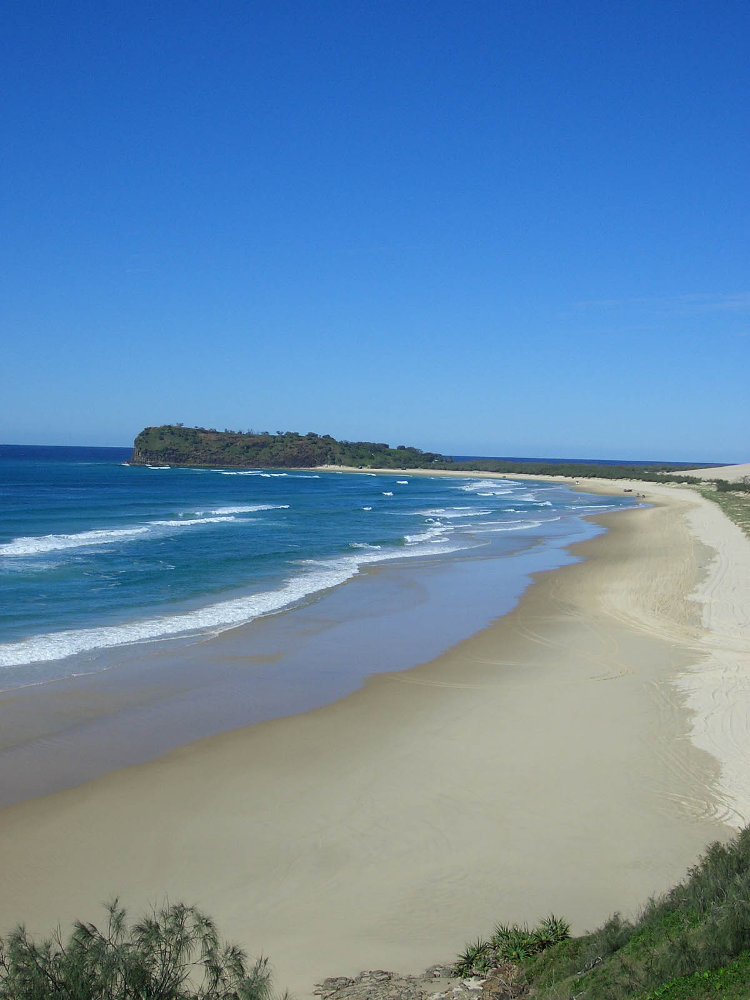
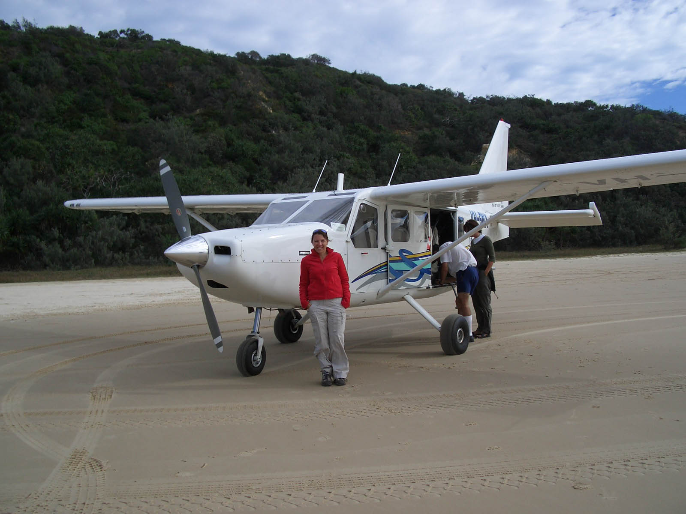
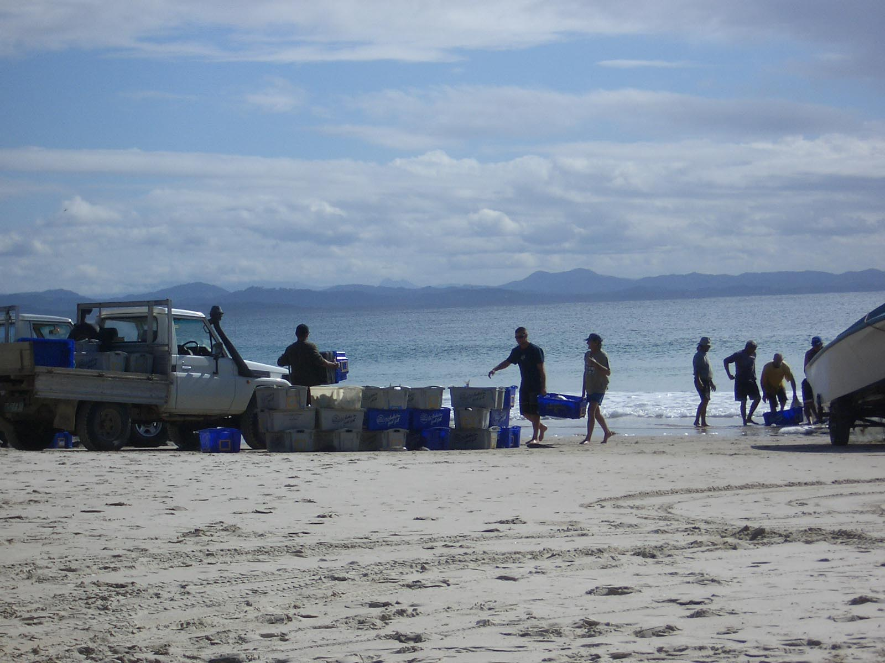
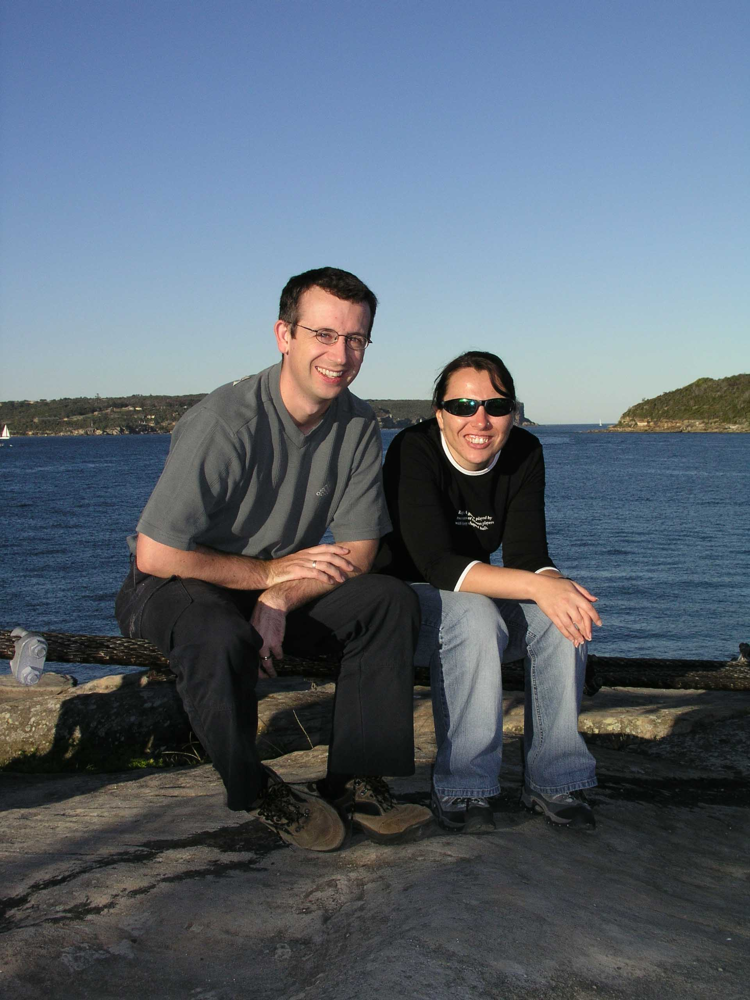

Still in Oz
East Coast, Australia
Well it has been a while since my last entry…lots of adventures so hope you are all sitting comfortably!!
I left Magnetic Island and travelled onto Airley Beach. Nice place, although it has no beach only a lagoon and there is only one main Road so it was a quiet place. From here I did my Sailing Trip around the Whitsunday Islands which was pretty amazing.
I sailed on a tall ship (ships with lots of sails) named the Derwin Hunter and spent 3 days sunning myself, going snorkelling and lying on the most amazing beaches. It’s the first time I’ve ever snorkelled and it took me a while to get used to it but then I really enjoyed it. I saw so many colourful fish and a giant clam and coral, really amazing. I did panic a bit when I got stuck over a whole lot of coral and couldn’t manoeuvre myself out, luckily help was at hand and Katie (one of the crew) directed me out. The only real shame about this trip is that every time you go in the water you have to wear these really attractive stinger suits (because Oz does have the most lethal jellyfish in the Southern Hemisphere…). I pulled left, right and centre in that – honest! On our second day we went to Whiteheaven beach, which I have to say, is probably the most beautiful beach I’ve ever seen. The sand has lots of silicon in it so it is whiter than white (and comes in very useful for cleaning silver jewellery) and the water is all different shades of blue, it looks stunning. There weren’t many people on this beach either because it’s only accessible by boat or plane.
Now the sleeping quarters on this ship were something else, i.e. non-existent. I know I’m not the tallest person in the world (don’t say it!!!) but even I had trouble fitting into those little bunk beds so the second night a few of us decided to sleep on deck. Even though it was a bit chilly it was worth it just to look at the sky (and breath some nice air!) and watching the sun rise in the morning.
On our third day we did some more snorkelling and swimming and just plain sailing (hahaha).
Anyway I have to say that I really enjoyed this sailing trip and I did meet some nice people. And I was land sick for a day after getting back to dry land – what a weird sensation!
I spent another night in Airley Beach and before leaving the next day I visited a zoo. Got to touch a baby crock and hold a snake. Just what I always wanted to do.
My next stop was Mackay, which was a bit of ghost city. When I arrived in the evening there wasn’t a soul on the streets, really spooky. The reason I stopped here is because I wanted to go to the Eungella National Park and I wanted to go and spot a platypus (as you do…). So I went of on my day trip. Our guide was really good and we got to see some nice Rain forest and some lovely waterfalls. But it was way to cold to get in, for me anyway! My motto on this trip is if the Locals don’t get in, then I don’t get in.
Then it was off to Rockhampton (or Rocky as the locals call it) where, the following morning (6.30AM!) I got picked up to go and stay at a farm. I had booked to stay at the Mayella Farm for 3 days but ended up staying 5 days. It was fantastic! I had so much fun and didn’t want to leave. We arrived in time for breakfast and everything was made over the fire. Tea, toast, eggs, bacon, everything. Then the newcomers, i.e. me and another couple, got kitted out in some ‘Farm Wear’ and we got to go out riding. 3 hour hack, haven’t sat in a saddle for a long time so you can imagine what my bum felt like after that. After lunch it was off to learn how to ride a motorbike. Now that was scary, nobody to help when you forget how to stop…not that that happened to me…not a lot anyway! Soon got the hang of that and went out exploring the farm. Then it was back for dinner and feeding the little wallaby that has lost his mum, so cute! Dinner is out in the open and tea is made over the fire. Needless to say after such a hectic day I was in bed very early! The next day it was up early to learn how to milk the cows (much harder than it looks, that is all I am saying!). Then we got on your motor bikes to catch all the horses and bring them in from the fields. We fed and saddled them and went off on our morning ride. On the way we would return the horses not being ridden that day to the field. Busy mornings! Then we got to learn how to herd cattle. Never thought of cows being intelligent or sensitive, I have to say!!! It was really good fun. We had to round them up and herd them into another field. On another day we had to separate 4 black cows from the herd and take them into another field. The afternoons were generally taken up by riding motorbikes or learning how to crack a whip. Every evening everyone was really tired but happy. I really wanted to stay longer but I still had more places to visit.
So I left Mayella Farm and on the way back I got to stop of in Morgan which used to be one of the biggest gold mining towns in Australia. I booked on a tour and I thought I would get to see some old gold mines. But it turned out that the total top half of the Mountain was mined and then they mined down into the mountain leaving a gigantic crater. This crater has been filling with rain water over the last 40/50 years. That in itself would probably not be bad. But the metal in the earth that is now exposed turns into acid when mixed with air and water. And as it rains a lot every now and then they now have a crater full of acid. And then again, maybe that wouldn’t be so bad if the crater wasn’t almost full and the acid wasn’t leaking through some of the walls. Oh, and then of course there is this little town named Morgan sitting at the bottom of the crater. But that is ok as well because apparently they don’t really mind or they don’t actually now about the fact that they are living beneath a lake of acid. Strange, that is all I am saying....
So, my next stop then was Harvey Bay where I did the Fraser Island trip. Fraser Island is an island made entirely from Sand and in the Aboriginal language is named K’Gari which means Goddess or Princess. And you can see why. The island really is lovely. But I think I did bring the cold weather along and even though the sun was shining it was bloody cold! Once we got the ferry over we had a walk through a really nice forest and then after lunch we hiked over some sand dunes to get to Lake Wabby. Very nice lake (as lakes go…) and still way to cold to get in, although some people did. Crazy people! The next day I visited the Champagne Pools where I saw a Tiger Shark. Have to say the scenery is stunning and, especially from the top of Indian Head. The beach goes on forever. Shame you can’t go swimming. Here you have to watch out for the sharks and the very strong currents. Just as well they have these nice lakes to swim in! On my last day I visited Lake McKenzie which was a stunning lake. The shades of blue of the water was fantastic. And again the white sand…Heaven.
Then it was back on the road again. The remaining trip I only stopped in each place for a couple of nights to have a look around and soak up the sun. This didn’t really go to plan because it was getting colder the more I headed down the coast (which I should have thought about before I started, I know.) Noosa was the really lovely. It just had a really nice atmosphere and the right amount of people. It has lovely beaches, nice restaurants, a really nice National Park. I left Noosa and went onto Brisbane. I thought Brisbane was quiet a nice little city. Not as nice (or as big) as Sydney but still nice. I went to a Casino which I really enjoyed. Didn’t do any gambling, just watched. Loads of people gambling a hell of a lot of money, and they didn’t look rich either. One of the guys tried to explain the backgammon game to me…lets just say if I had played and had won it would have been pure luck!
My next stop was Surfers Paradise. Just think Benidorm down under, enough said.
Then my last stay before returning to Sydney was Byron Bay. This place has a bit of a ‘hippy’ reputation to it and it is tranquil and quiet and lovely. Apparently people come and end up staying for weeks, if not months. I think I would get bored to be honest and some of the places where a bit over the top. I walked past a shop where you could get a passport picture with your aura colours around your head…please! And of course lots of incense in every other shop you go into.
So then it was back to Sydney for a couple of days before heading home. Sue and Nathan took me out on my last night to the most amazing Thai restaurant. It’s called Sailor's Thai (I think) so if you are ever in Sydney go (and have the beef)!!
Oz is a great country and I enjoyed every minute of being here. I would love to come back and travel the West Coast and do all the things I missed this time around. Because until you get here you can’t really appreciate how big this place really is. 10 weeks is nowhere near enough to see everything.
So I am home now and just enjoying not going to work! I could get used to this!! I am off to Spain in a few days and then I am off to America with Shaz. I have a feeling that the US trip will be a bit different to the Oz Experience! So the next entry will be from both of us. Until then hope you are all well and happy and off on you summer hols!!
Lots of Love, Kerstin xxx
I left Magnetic Island and travelled onto Airley Beach. Nice place, although it has no beach only a lagoon and there is only one main Road so it was a quiet place. From here I did my Sailing Trip around the Whitsunday Islands which was pretty amazing.
I sailed on a tall ship (ships with lots of sails) named the Derwin Hunter and spent 3 days sunning myself, going snorkelling and lying on the most amazing beaches. It’s the first time I’ve ever snorkelled and it took me a while to get used to it but then I really enjoyed it. I saw so many colourful fish and a giant clam and coral, really amazing. I did panic a bit when I got stuck over a whole lot of coral and couldn’t manoeuvre myself out, luckily help was at hand and Katie (one of the crew) directed me out. The only real shame about this trip is that every time you go in the water you have to wear these really attractive stinger suits (because Oz does have the most lethal jellyfish in the Southern Hemisphere…). I pulled left, right and centre in that – honest! On our second day we went to Whiteheaven beach, which I have to say, is probably the most beautiful beach I’ve ever seen. The sand has lots of silicon in it so it is whiter than white (and comes in very useful for cleaning silver jewellery) and the water is all different shades of blue, it looks stunning. There weren’t many people on this beach either because it’s only accessible by boat or plane.
Now the sleeping quarters on this ship were something else, i.e. non-existent. I know I’m not the tallest person in the world (don’t say it!!!) but even I had trouble fitting into those little bunk beds so the second night a few of us decided to sleep on deck. Even though it was a bit chilly it was worth it just to look at the sky (and breath some nice air!) and watching the sun rise in the morning.
On our third day we did some more snorkelling and swimming and just plain sailing (hahaha).
Anyway I have to say that I really enjoyed this sailing trip and I did meet some nice people. And I was land sick for a day after getting back to dry land – what a weird sensation!
I spent another night in Airley Beach and before leaving the next day I visited a zoo. Got to touch a baby crock and hold a snake. Just what I always wanted to do.
My next stop was Mackay, which was a bit of ghost city. When I arrived in the evening there wasn’t a soul on the streets, really spooky. The reason I stopped here is because I wanted to go to the Eungella National Park and I wanted to go and spot a platypus (as you do…). So I went of on my day trip. Our guide was really good and we got to see some nice Rain forest and some lovely waterfalls. But it was way to cold to get in, for me anyway! My motto on this trip is if the Locals don’t get in, then I don’t get in.
Then it was off to Rockhampton (or Rocky as the locals call it) where, the following morning (6.30AM!) I got picked up to go and stay at a farm. I had booked to stay at the Mayella Farm for 3 days but ended up staying 5 days. It was fantastic! I had so much fun and didn’t want to leave. We arrived in time for breakfast and everything was made over the fire. Tea, toast, eggs, bacon, everything. Then the newcomers, i.e. me and another couple, got kitted out in some ‘Farm Wear’ and we got to go out riding. 3 hour hack, haven’t sat in a saddle for a long time so you can imagine what my bum felt like after that. After lunch it was off to learn how to ride a motorbike. Now that was scary, nobody to help when you forget how to stop…not that that happened to me…not a lot anyway! Soon got the hang of that and went out exploring the farm. Then it was back for dinner and feeding the little wallaby that has lost his mum, so cute! Dinner is out in the open and tea is made over the fire. Needless to say after such a hectic day I was in bed very early! The next day it was up early to learn how to milk the cows (much harder than it looks, that is all I am saying!). Then we got on your motor bikes to catch all the horses and bring them in from the fields. We fed and saddled them and went off on our morning ride. On the way we would return the horses not being ridden that day to the field. Busy mornings! Then we got to learn how to herd cattle. Never thought of cows being intelligent or sensitive, I have to say!!! It was really good fun. We had to round them up and herd them into another field. On another day we had to separate 4 black cows from the herd and take them into another field. The afternoons were generally taken up by riding motorbikes or learning how to crack a whip. Every evening everyone was really tired but happy. I really wanted to stay longer but I still had more places to visit.
So I left Mayella Farm and on the way back I got to stop of in Morgan which used to be one of the biggest gold mining towns in Australia. I booked on a tour and I thought I would get to see some old gold mines. But it turned out that the total top half of the Mountain was mined and then they mined down into the mountain leaving a gigantic crater. This crater has been filling with rain water over the last 40/50 years. That in itself would probably not be bad. But the metal in the earth that is now exposed turns into acid when mixed with air and water. And as it rains a lot every now and then they now have a crater full of acid. And then again, maybe that wouldn’t be so bad if the crater wasn’t almost full and the acid wasn’t leaking through some of the walls. Oh, and then of course there is this little town named Morgan sitting at the bottom of the crater. But that is ok as well because apparently they don’t really mind or they don’t actually now about the fact that they are living beneath a lake of acid. Strange, that is all I am saying....
So, my next stop then was Harvey Bay where I did the Fraser Island trip. Fraser Island is an island made entirely from Sand and in the Aboriginal language is named K’Gari which means Goddess or Princess. And you can see why. The island really is lovely. But I think I did bring the cold weather along and even though the sun was shining it was bloody cold! Once we got the ferry over we had a walk through a really nice forest and then after lunch we hiked over some sand dunes to get to Lake Wabby. Very nice lake (as lakes go…) and still way to cold to get in, although some people did. Crazy people! The next day I visited the Champagne Pools where I saw a Tiger Shark. Have to say the scenery is stunning and, especially from the top of Indian Head. The beach goes on forever. Shame you can’t go swimming. Here you have to watch out for the sharks and the very strong currents. Just as well they have these nice lakes to swim in! On my last day I visited Lake McKenzie which was a stunning lake. The shades of blue of the water was fantastic. And again the white sand…Heaven.
Then it was back on the road again. The remaining trip I only stopped in each place for a couple of nights to have a look around and soak up the sun. This didn’t really go to plan because it was getting colder the more I headed down the coast (which I should have thought about before I started, I know.) Noosa was the really lovely. It just had a really nice atmosphere and the right amount of people. It has lovely beaches, nice restaurants, a really nice National Park. I left Noosa and went onto Brisbane. I thought Brisbane was quiet a nice little city. Not as nice (or as big) as Sydney but still nice. I went to a Casino which I really enjoyed. Didn’t do any gambling, just watched. Loads of people gambling a hell of a lot of money, and they didn’t look rich either. One of the guys tried to explain the backgammon game to me…lets just say if I had played and had won it would have been pure luck!
My next stop was Surfers Paradise. Just think Benidorm down under, enough said.
Then my last stay before returning to Sydney was Byron Bay. This place has a bit of a ‘hippy’ reputation to it and it is tranquil and quiet and lovely. Apparently people come and end up staying for weeks, if not months. I think I would get bored to be honest and some of the places where a bit over the top. I walked past a shop where you could get a passport picture with your aura colours around your head…please! And of course lots of incense in every other shop you go into.
So then it was back to Sydney for a couple of days before heading home. Sue and Nathan took me out on my last night to the most amazing Thai restaurant. It’s called Sailor's Thai (I think) so if you are ever in Sydney go (and have the beef)!!
Oz is a great country and I enjoyed every minute of being here. I would love to come back and travel the West Coast and do all the things I missed this time around. Because until you get here you can’t really appreciate how big this place really is. 10 weeks is nowhere near enough to see everything.
So I am home now and just enjoying not going to work! I could get used to this!! I am off to Spain in a few days and then I am off to America with Shaz. I have a feeling that the US trip will be a bit different to the Oz Experience! So the next entry will be from both of us. Until then hope you are all well and happy and off on you summer hols!!
Lots of Love, Kerstin xxx

On Mayella Farm

The crew of the Darwen Hunter

Scary old croc!

White'heaven' beach

You really wouldn't want to mess with him!

No one was safe (not even the bull!)

Fraser Island

Me on a very very small plane!

Noosa Beach

Sufer's Paradise - lovely beach - but that was about it!

Fishing at Byron Bay

Me posing in front of the bridge

Me and Nathan at Balmoral Beach, Sydney - Sue is taking the photo!